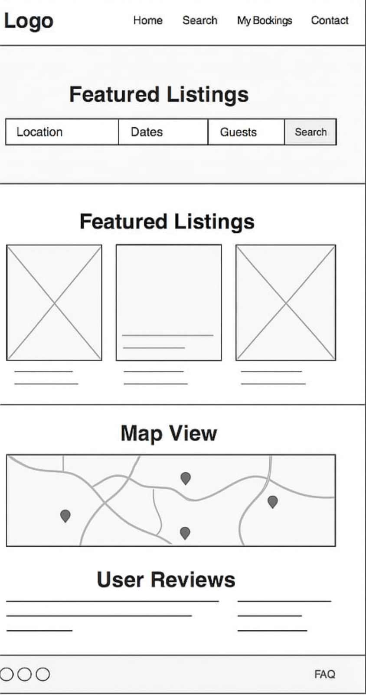
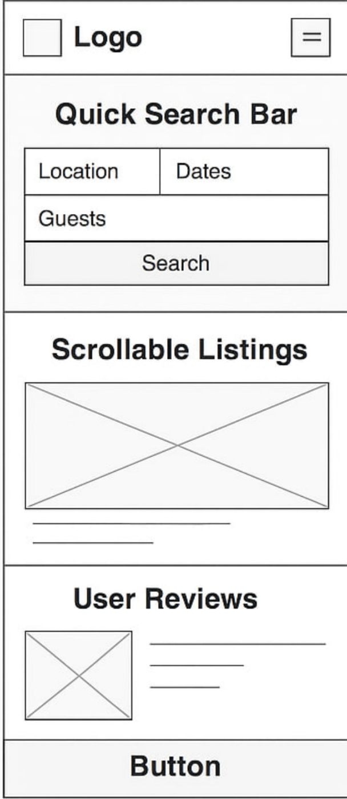

Site Name
RentAway
Site Purpose
RentAway is designed to help users find, compare, and book vacation rentals that fit their preferences. The website provides: A comprehensive listing of vacation rentals. Advanced search and filtering options. A booking request system for seamless reservations. User ratings and reviews to ensure informed decision-making. Interactive map views for location-based searches.
Scenarios
- "How do I find a vacation rental within my budget and preferred locatio
- "Can I read reviews from past guests before booking a property?"
- "How do I request a booking, and how long does it take for approval?"
- "Are there any rentals available near tourist attractions?"
Color Schema
--main-collor: #003366; heddings
--secondary-collor: #d1e8ff; backgrounds
--highlighted-text: #f4d03f; for bring attention parts
Typography
font-family: "Open Sans", sans-serif;
Wireframe
Desktop
Mobile
